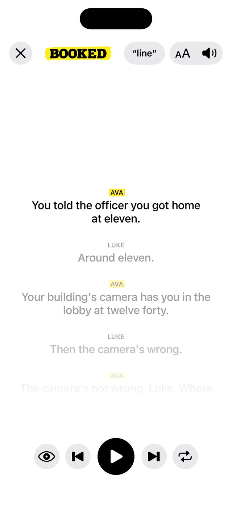
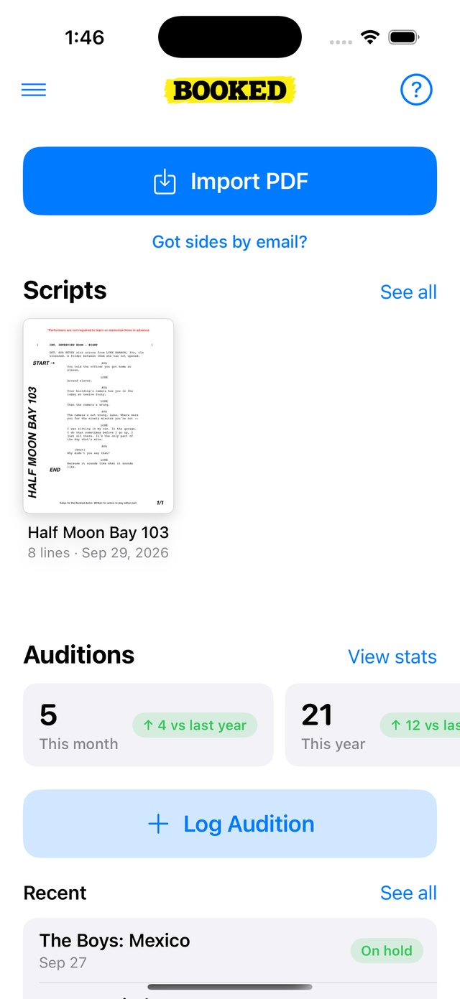
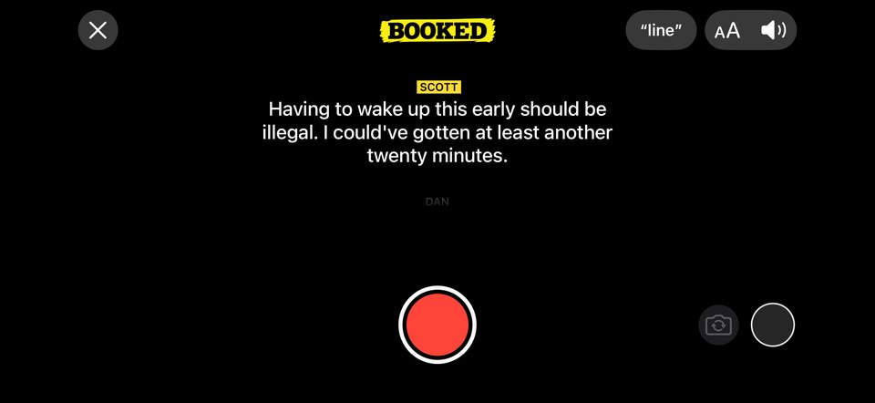
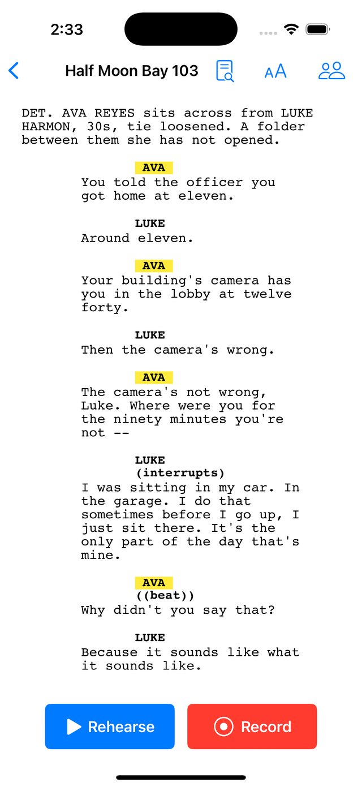
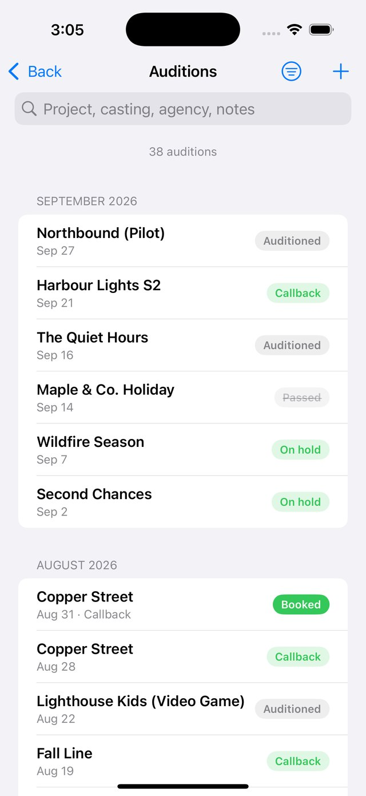
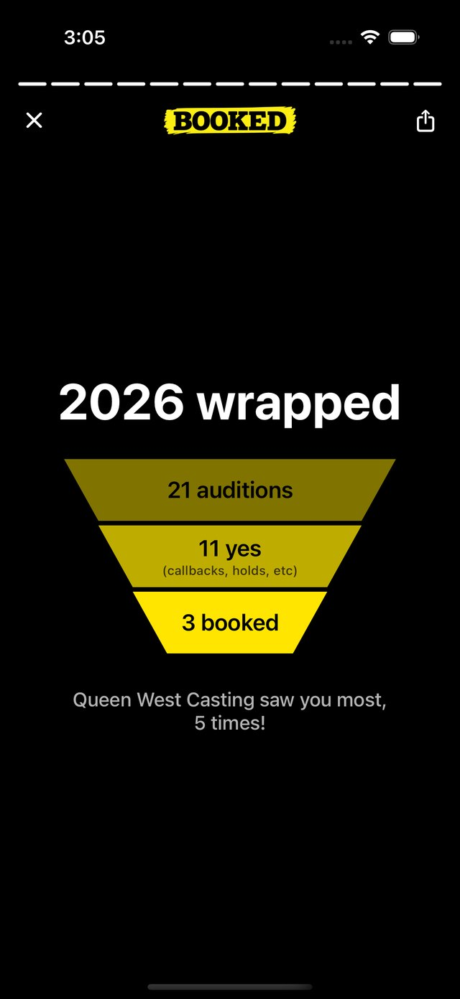

Get booked.
Learn lines, rehearse and self-tape whenever you want.

Learn lines, rehearse and self-tape whenever you want.

Import the sides directly from your email.

The reader feeds you your next line.
Record self-tapes solo.

Sides at 11 p.m., tape in by morning. No favours owed.

Log it in seconds. See how many auditions you've done, who calls you in most, and how many parts you booked.

The one who is always ready and at the end of the year has the numbers to prove it.

I've been acting for over a decade (The Boys, Reacher, Assassin's Creed). I know the feeling: your audition is due tomorrow, your friend isn't free, your roommate is tired of reading, and casting doesn't like hearing you act with a recording of yourself. That's why I made Booked.
Rehearsals are heard on the phone itself, and takes never leave it. The details are in the privacy policy.
Use a reader app. Booked reads the other characters in a natural voice, waits while you speak, and comes in on your last word, so you can record the take alone. Casting hears a real back-and-forth, not you acting against a recording of your own voice.
Run the scene out loud, with a reader, as many times as it takes. When you blank, call “line” and Booked feeds you the next few words instead of you stopping to look at the page.
An iPhone and the PDF of your sides. Booked reads it and works out who says what.
Open the email, tap the PDF, tap Share, pick Booked. The first time, Booked is under More: tap More, then Edit, then the + beside Booked, then the checkmark to save. The support page walks through it with pictures.
Yes. PDFs from casting or your agent, including scans with your start and end marks. A sharp scan works; a blurry photo of a page may not.
Downloading, tracking your auditions and the demo scene are free. Building a reader for your own sides costs real money per script, so that part is paid, and priced well under hiring a reader.
No. Your scripts, rehearsals and self-tapes are not used to train AI, by us or by the services behind the reader. Takes never leave your phone.
It's with Apple for review now. Leave your email and you'll get one note the day it's live.
After iPhone. Leave your email and you'll get one note when it's on Google Play.
You can talk to me. aris@bookedactors.com, or Message Aris from inside the app.